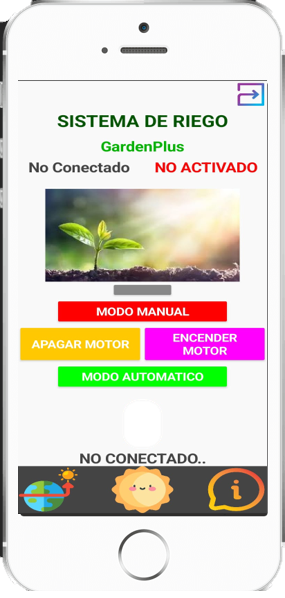
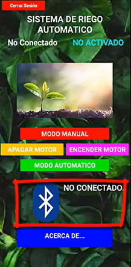
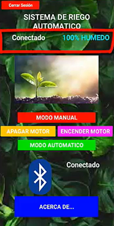
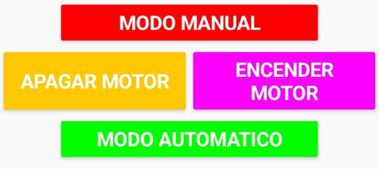

Tutorial de APP
Conoce paso a paso cómo instalar y configurar la app de GardenPlus.

HOLA MI NOMBRE ES SOLEBOT!!,
Te voy a explicar paso a paso como instalar la aplicación y ser amig@s

- Tener la aplicación instalada en tu dispositivo móvil. Descarga
- Contar con un módulo Bluetooth en el sistema de riego.
- Tener activado el Bluetooth en tu celular.
1. Instalación y Requisitos Previos

- Asegúrate de que el módulo Bluetooth del sistema de riego esté encendido.
- En la aplicación, presiona el botón de "Conectar Bluetooth".
- Aparecerá una lista de dispositivos disponibles, selecciona el módulo de riego.
- Espera la confirmación de conexión.
3. Conexión con el Sistema de Riego

- En la pantalla principal de la app, verás un indicador con el porcentaje de humedad actual del suelo.
- Si el porcentaje de humedad es bajo, la app puede recomendar activar el riego.
- Se actualiza en tiempo real conforme la humedad cambia.
4. Monitoreo de la Humedad

- Si activas esta opción, el sistema encenderá o apagará el motor automáticamente con base en los valores de humedad.
- Ideal para mantener un riego eficiente sin intervención manual.
- Presiona el botón "Automático" en la aplicación.
- Verás una confirmación de que el sistema manejará el riego según la humedad.
- En este modo, tú decides cuándo encender o apagar el motor.
- Útil si quieres un control más preciso del riego.
- Presiona el botón "Manual".
- Aparecerán botones para "Encender" y "Apagar" el motor.
- Presiona "Encender" para activar el riego.
- Presiona "Apagar" cuando ya no sea necesario regar.
5. Modos de Funcionamiento
Modo Automático
Cómo activarlo:
Modo Manual
Cómo usarlo:
- Asegúrate de que el módulo de riego esté encendido.
- Verifica que el Bluetooth del celular esté activado.
- Prueba desconectar y volver a conectar el módulo.
Solución de Problemas
❌ No se conecta el Bluetooth:
❌ No se conecta el Bluetooth:
❌ El motor no enciende en automático:
❌ El motor no enciende en automático:
- Revisa si el umbral de humedad está correctamente configurado.
- Asegúrate de que el motor esté funcionando manualmente.